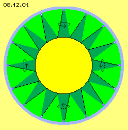
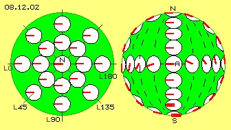
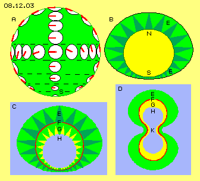
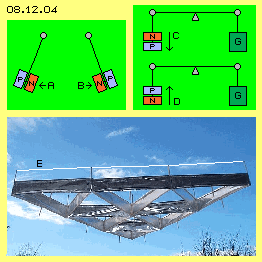
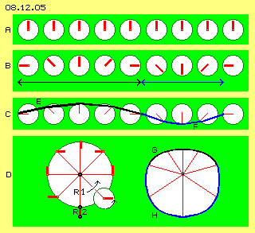
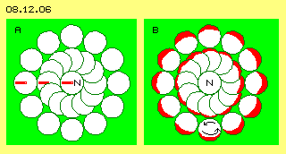
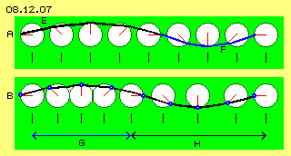
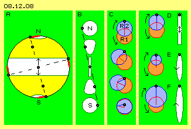
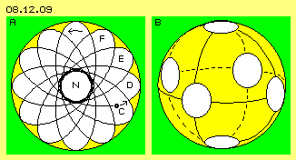
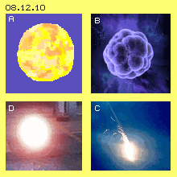

Spekulationen
Im vorigen Kapitel wurde das Bewegungsmuster des Sonnensystems diskutiert und in einem folgenden Kapitel werden die vielfältigen Bewegungen der Sonne besprochen. Die Kugelform ist eine häufige Erscheinung in der Natur, einerseits riesig groß wie Sterne und andererseits winzig klein wie Atome. Darum sollen nachfolgend generelle Bewegungsmuster des Äthers untersucht werden, die kugelförmige Objekte ergeben können.
Nicht all diese Objekte repräsentieren ´materielle´ Erscheinungen, vielmehr können dies auch rein ´ätherische´ Gebilde sein. Solche Äther-Schwingungen bilden z.B. eine Membrane oder eine ´Aura´, welche das Innere gegen äußere Einflüsse abschirmen. Diese Bewegungsmuster haben darum große Bedeutung, z.B. bei Atomhüllen, elektrischer Ladung oder biologischen Zellen - und weit darüber hinaus. Zur Vorbereitung der folgenden Kapitel werden hier zunächst die prinzipiellen Bewegungs-Notwendigkeiten und -Möglichkeiten solcher Erscheinungen aufgezeigt und anhand einiger Beispiele dargestellt.
Ich bemühe mich immer, nur rein physikalische Prozesse zu beschreiben, eigentlich nur die ´simple´ Mechanik von Ätherbewegungen. Einige Ausprägungen dieser Bewegungs-Prinzipien kann ich erst viele Monate oder Jahre später mit allen Details beschreiben. In diesem Kapitel (und den nächsten Kapiteln) möchte ich aber schon vorweg einige spekulative Aspekte in den Raum stellen - und hoffe, dass Leser diese Anmerkungen dennoch interessant finden. Manche dieser Aussagen mögen sehr fremdartig erscheinen, dennoch kann / darf / sollte man über diese Anregungen nachdenken.

Wirbel-Stern
Ausgangspunkt der Überlegungen soll die in Bild 08.12.01 skizzierte ´Idealform´ eines sternförmigen Wirbelsystems sein. Es gibt einen zentralen, kugelförmigen Bereich (gelb) mit weiträumigem Schwingen. Von der Oberfläche dieser Kugel werden die Radien des Schwingens nach außen immer kürzer, bis sie in das kleinräumige Schwingen des Freien Äthers (blau) übergehen.
Jede Verbindungslinie (schwarz) zwischen Kugeloberfläche und Freiem Äther beschreibt einen Kegelmantel. Viele solcher Kegel (dunkelgrün) sind rundum gegeben, alles Schwingen verläuft synchron, gleichartig und gleichsinnig (siehe Pfeile). Jeweils von außen gesehen schwingt aller Äther linksdrehend, bis zur Kugeloberfläche auf immer weiteren Radien. Dieses Wirbeln ist also vollkommen kugel-symmetrisch, bietet von allen Seiten das gleiche Bild bzw. zeigt analogen Bewegungsablauf rundum.
Die hier abgebildeten Kegel repräsentieren das Schwingen einiger benachbarter Ätherpunkte auf den schwarzen Verbindungslinien. Jeder Ätherpunkt dreht dabei um seinen eigenen Drehpunkt. Es findet paralleles ´Schwingen´ statt (im Gegensatz zu ´Rotation´, wie in vorigen Kapiteln definiert). Die gesamte Kugel-Oberfläche ist also schwingend, innen auf relativ weiten Radien, in äußeren Sphären in jeweils geringerem Umfang, bis letztlich hin zum ´ruhenden´ Freien Äther.
Die eingezeichneten Pfeile zeigen das synchrone Schwingen auf diesem Großkreis um die zentrale Kugel. In dieser Phase schwingt Äther links nach oben, oben schwingt er nach rechts, rechts dann nach unten, unten zurück nach links. Etwas später bewegt sich der Äther in entgegengesetzte Richtung und letztlich kommt jeder Ätherpunkt auf einer Kreisbahn zurück zu seinem Ausgangsort. Der Kern dieses Sterns ist also eingehüllt in einer runden Sphäre gleichförmig schwingenden Äthers - sofern das real möglich wäre.
Schwingende Pol-Kappe
Bild 08.12.02 zeigt einen Blick auf den Nordpol N, an welchem Äther kreisförmig schwingt. Wie in früheren Darstellungen ist die Position beobachteter Ätherpunkte jeweils am Ende dieser Uhrzeiger unterstellt. Momentan ist ein Ätherpunkt links von seinem Drehpunkt N positioniert. Parallel dazu weisen alle Uhrzeiger benachbarter Ätherpunkte, so dass alle etwas nach links versetzt sind gegenüber ihren jeweiligen Drehpunkten.

Eingezeichnet sind hier Längengrade, links der Null-Meridian (L0) und noch vier Längengrade (L45, L90, L135 und L180). Nur auf dem Großkreis L0 / L180 weisen die Uhren genau in dessen Richtung. Obwohl alle Uhren parallel angeordnet sind, bilden die Zeiger zum jeweiligen Längengrad einen entsprechenden Winkel, z.B. von 90 Grad bei L90. In diesem Sinne sind die Uhren versetzt angeordnet, rundum nach jeweils 30 Grad zeigen die Uhren eine andere Stunde an (jeweils von außen gesehen bzw. bezogen auf ihren Großkreis).
In diesem Bild rechts ist eine Seitenansicht dieser Kugel dargestellt. Vom Nordpol N zum Südpol S weisen alle Zeiger entlang des Null-Meridians (links) nach unten, entlang des 180-Längengrads (rechts) nach oben. Entlang des Äquators A ergibt sich die ´zeitversetzte´ Anordnung der Uhren. Dies korrespondiert z.B. mit dem 90-Grad-Winkel am Längengrad 90 (mittig, bei A), wo vom Nordpol bis zum Südpol alle Zeiger nach links weisen.
Wer jemals eine Tapete auf eine nicht vollkommen plane Wand zu kleistern hatte, weiß was jetzt kommen muss - das Muster passt nicht mehr zusammen. Hier weisen zum Südpol hin die Zeiger in gegensätzliche Richtungen (siehe dick gezeichnete Uhrzeiger bei S). Ein Ätherpunkt kann aber nicht nach links und zugleich nach rechts versetzt sein gegenüber seinem Drehpunkt. Die Ätherpunkte an einer Pol-Kappe (hier bei N) können also sehr wohl parallel schwingend sein, nicht aber alle Punkte an der gesamten Oberfläche einer Kugel.
Quallen-Hülle
Dieses Ätherschwingen erfolgt auf sehr kurzen Radien, z.B. im Vergleich zum riesigen Radius der Sonne. An deren Oberfläche herrschen ohnehin ´chaotische´ Bewegungen, so dass solche ´Ungereimtheiten´ unerheblich sind. Nichtsdestotrotz müsste es ein ´perfektes´ Bewegungsmuster geben, zumindest für relativ kleine Kugeln wie beispielsweise einfache Atome. Viele Monate lang suchte ich vergeblich nach einer Lösung obigen Dilemmas - bis mir ein Lösungsansatz ´zu-fiel´: Qualle. Die obigen Parallel-Bewegungen können nur auf einer Pol-Kappe statt finden, also muss das Objekt am anderen Pol (mehr oder weniger) offen bzw. muss das Muster dort auslaufend sein. In Bild 08.12.03 sind diese Überlegungen per schematischen Querschnitten skizziert.

Bei A ist vorige Sicht auf die Kugel nochmals dargestellt, vom Äquator abwärts sind die Uhren jedoch kleiner gezeichnet. Das Schwingen des Äthers wird zum Südpol S hin immer geringer und geht letztlich in das minimale Schwingen Freien Äthers über. Damit reduzieren sich gegenläufige Bewegungen und verschwinden letztlich ganz (wie wenn das Muster obiger Tapete immer kleiner würde, zum Pol hin minimal, so dass sich alle Differenzen auflösen).
Bei B ist die Kugel (gelb) in etwas kleinerem Maßstab noch einmal gezeichnet. Beim Nordpol N und seiner (flachen) Kappe ist weites Schwingen gegeben und entsprechend weit reichen die Kegel (dunkelgrün) ausgleichender Bewegungen zum Freien Äther hinaus. Je näher zum Südpol S, desto kleiner wird das Schwingen und desto kürzere Kegel sind nurmehr erforderlich. Die gesamte ´Aura´ (E, hellgrün und dunkel-grün markiert) ausgleichender Bewegungen ist also nicht mehr kugelförmig, sondern an einem Pol wesentlich dünner.
Bei C ist ein Querschnitt durch dieses ovale Objekt noch einmal dargestellt. Das Schwingen des Äthers erfolgt von außen nach innen auf immer weiteren Radien, was oben als Aura E gekennzeichnet wurde. An der Kugeloberfläche F (hier rot markiert) ist das Schwingen maximal weit.
Bislang wurde der Bereich innerhalb dieser Schale nur als ´gelber Stern´ skizziert. Das Ätherschwingen kann aber nach innen nicht weiter zunehmen, weil sich sonst tatsächlich gegenläufige Bewegungen hoher Intensität ergäben (die sich nur explosiv entspannen können, z.B. in Form einer Supernova). Real muss also das Ätherschwingen auch innerhalb dieser Kugel-Schale wieder auf kürzere Radien reduziert sein. Dieser innere Ausgleichsbereich G ist hier hellgrün und gelb markiert. Das Schwingen kann im Zentrum H (blau) so weit reduziert sein, dass es Freiem Äther entspricht.
Monopol-Hüllen-Wirbel
Dieses Schwingungsmuster stellt also keine (massive) Kugel dar, sondern ist eigentlich nur eine Hülle, welche im Freien Äther schwimmt - und auch innen Freien Äther enthält. Dieses Objekt wirkt wie eine Membrane, welche eine ´Innen-Welt´ beschützt, so dass diese auch total eigenständige ´Inhalte´ aufweisen könnte (durch ganz andere Bewegungsmuster). Dieser wichtige Gesichtspunkt einer ´rein ätherischen Hülle´ wird im übernächsten Kapitel weiter geführt. Die vorliegende ´Qualle´ weist aber auch andere interessante Eigenschaften auf.
Das Schwingen im Bereich F der äußeren Ausgleichsbewegungen wird im gängigen Sprachgebrauch als ´Ladung´ bezeichnet. Weil hier das Schwingen mit unterschiedlicher Intensität gegeben ist, ist dieses Objekt nicht neutral, vielmehr würde man den Nordpol negativ und den Südpol positiv bezeichnen (wobei ´positiv´ keinen Gegensatz zu ´negativ´ darstellt, sondern ´positiv´ nur ein geringeres Ladungs-Schwingen ist). Am Südpol kann das Schwingen durchaus nur entsprechend dem des Freien Äthers sein. Punktuell ist sogar keine Ladung vorhanden, d.h. dieses Objekt ist ein Monopol. Ich bezeichne dieses Bewegungsmuster darum als ´Monopol-Hüllen-Wirbel´.
Feines Ätherschwingen übt Druck (Ätherdruck, siehe vorige Kapitel) aus gegenüber grobem Schwingen. Je gröber das Schwingen, desto stärker ist dieser Druck. Hier erfährt das Objekt auf den Nordpol höheren Druck, wird also im Äther vorwärts geschoben (immer in Richtung Südpol). Dieses Objekt ist somit höchst beweglich und ´schusselt´ ständig im Äther herum. Andererseits hat es einen relativ ruhigen Südpol - und beispielsweise können zwei dieser Objekte durchaus aneinander andocken, an ihren jeweiligen Südpolen, wie in diesem Bild schematisch bei D skizziert ist. Es ist also keinesfalls so, dass gleichnamige Pole gegenseitig abstoßend und un-gleiche anziehend sind. Vielmehr stellt sich bei Objekten (d.h. allen Äther-Wirbelsystemen) immer dann und dort eine Verbindung her, wo passende Bewegungen zusammen kommen.
Spekulation: Biefeld-Brown-Effekt

Der bekannte Biefeld-Brown-Effekt ist in Bild 08.12.04 skizziert: wenn ein Kondensator (mit hoher Aufladung) an einem Pendel aufgehängt ist, wird das Pendel immer zur Seite der Plus-Platte P (blau) ausgelenkt (siehe Pfeile A und B). Wenn dieser Kondensator auf einer Waage installiert ist, wird er verstärkt nach unten gedrückt (siehe Pfeil C), wenn die Negativ-Platte N (rot) oben angeordnet ist. Im umgekehrten Fall wird das Gewicht reduziert (siehe Pfeil D). Dieser Effekt tritt auch im Vakuum auf, d.h. irgendwelcher ´Ionen-Wind´ kann dafür keine Ursache sein.
Die wahre Ursache dieses Effektes basiert darauf, dass Ladung ein Äther-Schwingen an Leiter-Oberflächen darstellt. Negative Ladung ist weit bzw. intensiv schwingend, erfordert eine hohe ´Aura´ und daraus ergibt sich hoher Gegendruck durch den umgebenden Freien Äther. Positive Ladung gibt es nicht, sondern ist nur eine geringeres Schwingen mit entsprechend schwächerer Aura und damit geringerem Äther-Gegendruck.
Dieses Phänomen wurde auch beim sogenannten ´Lifter´ genutzt, wie er z.B. von J.L.Naudin gebaut wurde. Oben ist ein Kranz dünner Drähte (im Bild bei E weiß hervorgehoben) angebracht, der nur wenig Ladung aufnehmen kann. Unterhalb davon sind breite Alu-Folien angebracht, die wesentlich mehr Ladung tragen können. Wenn das gesamte Gebilde unter hohe Spannung gesetzt wird, hebt es ab und schwebt frei im Raum. Entgegen gängiger Erklärungen ist nur die Differenz der Ladungs-Aura und damit des asymmetrischen Äther-Drucks ursächlich für diesen Effekt - analog zur Asymmetrie der Aura in vorigem Bild 08.12.03 bei B und C (was auch später nochmals aufgegriffen wird).
Rundum-Welle-mit-Schlag

In Bild 08.12.05 ist ein anderer Ansatz zur Suche des ´perfekten´ Bewegungsmusters auf Kugeloberflächen skizziert. Ausgangspunkt ist hierbei die Ätherbewegung im Bereich des Äquators. Dort können nicht alle ´Uhren´ in gleiche Richtung zeigen (z.B. wie bei A alle nach oben weisen), weil sonst aller Äther zum Nordpol hoch schwappen (wo kein entsprechender Raum verfügbar ist) und anschließend wieder auf einer Kreisbahn zum Südpol hinunter schwappen würde.
Wie schon früher dargestellt, werden diese Uhren zeitlich versetzt sein müssen (wie bei B skizziert ist anhand von acht Uhren, deren Zeiger jeweils um 45 Grad versetzt sind). Dann schwappt einerseits der Äther aufwärts zum Nordpol und auf der gegenüber liegenden Seite vom Nordpol abwärts. Wenn alle Uhren synchron drehen, sind diese beiden Bereiche aber ungleich lang (siehe schwarze und blaue Linien). Bei C ist die daraus resultierende Problematik skizziert: die Distanzen zwischen den Ätherpunkten sind unterschiedlich, bei E (schwarz) sehr viel länger als bei F (blau). Im lückenlosen Äther jedoch müssen die Abstände benachbarter Ätherpunkte immer konstant bleiben.
Eine Lösung dieser Problematik ist links bei D skizziert: ein Ätherpunkt darf nicht nur um einen Drehpunkt mit Radius R1 schwingen, vielmehr muss diese Bewegung überlagert sein durch ein zweites, gleichsinniges Schwingen mit Radius R2. Daraus resultiert eine Bahn-mit-Schlag (siehe vorige Kapitel), wie rechts bei D dargestellt ist.
Oben herüber bewegt sich der Ätherpunkt je Zeiteinheit nur geringe Distanzen vorwärts (siehe schwarze Kurve G). Mit dieser Bewegung werden die langen Abschnitte in obigem Bereich E kompensiert. Unten herum kommen der Ätherpunkt je Zeiteinheit weiter voran (siehe blaue Kurve H). Mit dieser Bewegung werden die kurzen Abschnitte in obigem Bereich F kompensiert.
Wie schon erwähnt wurde, spielen solche Differenzen am Umfang der riesigen Sonne keine Rolle bzw. werden durch zusätzliche Bewegung in der dritten Dimension ausgeglichen. Bei kleinen Objekten aber sollte ein durchgängiges Schwingen direkt auf der kugelförmigen Fläche einer Hülle möglich sein. Hier wie dort müssen alle Nachbar-Ätherpunkte immer konstante Distanz aufweisen, selbst wenn bereichsweise unterschiedlich schnelle Bewegung gegeben ist.
Differenziertes Schlagen

Eine für die Sonne wichtige Erkenntnis ist bereits hier abzuleiten aus der Darstellung in Bild 08.12.06 bei A. Diese Skizze zeigt einen Blick auf den Nordpol N, dessen Uhrzeiger nach links weist (und wie bei obigem Bild 08.12.02 weisen alle Zeiger ebenso nach links, hier nur durch drei rote Zeiger angedeutet). Der Ätherpunkt am Nordpol schwingt um diesen Drehpunkt, je Zeiteinheit z.B. um 30 Grad, wobei er jeweils gleich lange Distanzen im Raum zurück legt.
Auch Ätherpunkte ´in der zweiten Reihe´ drehen auf ihren eng benachbarten Uhren. Obwohl diese unterschiedliche Zeit anzeigen (mit Blick auf den jeweiligen Längengrad), sind die Distanzen zwischen den Ätherpunkten noch fast gleich lang. Die Uhren der Ätherpunkte der ´dritten Reihe´ sind weiter auseinander und die Differenzen werden größer. Am Äquator ergeben sich vorige große Differenzen, die nur mit ungleichförmigem Schwingen zu überbrücken sind.
Für die Sonne (bzw. generell für dieses Stern-Wirbel-System) ergibt sich daraus die Erscheinung differenzierter Drehung: am Pol ist der Äther auf einer Kreisbahn schwingend. Weiter zum Äquator hin muss diese Kreisbahn übergehen in Bahnen-mit-Schlag. Während einer Zeithälfte gibt es eine weit ausgreifende Vorwärtsbewegung (immer im Drehsinn des Systems, hier also linksdrehend), während in der zweiten Zeithälfte eine langsame Rück-Bewegung statt findet. Dieses ´Schlagen´ der Ätherbewegung ist am Äquator sehr viel heftiger als an höheren Breitengraden und auf der Pol-Kappe erfolgt das Schwingen auf einer Kreisbahn ohne Schlag. In diesem Bild bei B ist dieses zunehmende Schlagen zum Äquator hin durch rote Segmente in den jeweiligen Uhren markiert.
Der Äther weist also im Bereich des Äquators eine vorwärts schlagende Bewegung auf, während er an den Polen gleichförmig schwingend ist. Dabei bleibt aller Äther dennoch relativ ortsfest, ist nur schwingend auf mehr oder weniger ´exzentrischen´ Bahnen. Bei unserer Sonne wird dieser Effekt durch die Bewegung materieller Partikel verstärkt und das Gas rotiert am Äquator tatsächlich schneller als in den Pol-Bereichen (was ein paar Kapitel später detailliert wird).

Keine Kreise
In Bild 08.12.07 sind bei A nochmals diese Uhren am Äquator dargestellt mit jeweils gleichem Abstand zwischen den Uhren (siehe senkrechte Markierungen). Die Uhrzeiger sind jeweils um 45 Grad versetzt (wie in obigem Bild 08.12.05 bei B und C). Daraus ergaben sich die unterschiedlichen Distanzen zwischen den Ätherpunkten (lange schwarze Linien im Bereich E, kurze blaue Linien im Bereich F). Ein Ausgleich dieser Differenzen wurde durch vorige Bahnen-mit-Schlag erreicht - aber diese Konstruktion überlagerter Kreisbewegungen ist der falsche Ansatz.
Ich war fixiert auf die Ableitung der notwendigen Bewegungen aus Kreisbahnen und deren Überlagerungen. Schon die Kreisbahn ist eine formale Abstraktion gegenüber den realen Bewegungen des Freien Äthers, welche ich in früheren Teilen als ´Spiralknäuelbahnen´ beschrieb. Diese erscheinen geradezu ´chaotisch´, weil sie aus unzähligen Überlagerungen resultieren.
Reale Äther-Bewegungen aus Kreisbahnen ableiten zu wollen ist so abwegig, wie das Wetter aus kreisförmigen Luftbewegungen vorhersagen zu wollen. Die Luftpartikel bewegen sich nicht auf festgelegten Bahnen, sondern fließen immer nur aus Bereichen relativ hoher Dichte zu Bereichen geringerer Dichte. Wenn die Dichte-Differenzen ausgeglichen sind, kommt es zum Stillstand. Dieses Gesetz gilt generell in der ´materiellen Welt´: Energie bzw. Bewegung (egal welcher Art) resultiert nur aus dem Vorhandensein von Potentialen. Und umgekehrt gilt auch: wo keine Differenzen (mehr) gegeben sind, herrscht energie-loser Stillstand.
Bewegungs-Notwendigkeit
Innerhalb des Äthers gilt ein anderes oberstes Gesetz: dieses Medium ist lückenlos und nicht kompressibel, darum muss der Abstand benachbarter Ätherpunkte immer konstant sein, egal welche Bewegung innerhalb des Äthers lokal vorhanden ist. Der Äther kann in sich schwingen und twisten in allen drei Dimensionen, aber der Abstand von Ätherpunkten muss dabei immer konstant sein. Aller Äther ist immer in Bewegung und - anders als in der Teilchen-Welt - kann niemals zum Stillstand kommen. Nur auf dieser Basis einer lückenlosen und ´ruhelosen´ Ur-Substanz ist Energie-Konstanz überhaupt denkbar und real gegeben.
Im konkreten Fall bedeutet das: wenn irgendwo ein kugelförmiges Bewegungsmuster zustande kam, sind die Bahnen von Ätherpunkten nicht ausgerichtet an perfekten Kreisen und deren Überlagerungen, sondern kommen ausschließlich zustande durch die Einhaltung konstanter Abstände zwischen diesen Ätherpunkten. In obigem Beispiel, Bild 08.12.07 bei B, ist die schwarze Kurve unterteilt in gleiche Abstände (siehe blaue Punkte) - und als Konsequenz daraus müssen die Uhren dann eben un-gleiche Abstände aufweisen (im Bereich G näher zusammen als im Bereich H, siehe Markierungen). Oder wenn man weiterhin per Uhren gleichen Abstandes denken wollte, dürfen diese nicht um konstante Gradzahl gegeneinander versetzt sein oder dürfen nicht stets gleich schnell drehen.
Dipol-Hüllen-System
Am Äquator ist damit schwingende Bewegung möglich, einerseits aufwärts zum Nordpol und auf der gegenüber liegenden Seite abwärts vom Nordpol. Diese Bewegung ist nicht mehr gleichförmig, sondern ergibt sich zwingend nur aus der Einhaltung konstanter Abstände zwischen benachbarten Ätherpunkten. Generell sind damit höchst variable Bewegungsmuster möglich.
Hier erfordert diese Bedingung beispielsweise, dass die Abstände auch in Richtung zu den Polen konstant bleiben. Weil die Punkte auf höheren Breitengraden enger zusammen rücken, wird vorige ´Welle´ zunehmend gedämpft, bis sie an den Polen letztlich in kreisförmiges Schwingen übergeht. Dieses Bewegungsmuster bezeichne ich darum als ´Dipol-Hüllen-System´. Es wird zusammen gehalten vom äußeren Druck des umgebenden Freien Äthers und analog zu obigem Monopol-Hüllen-System wird dieses schalenförmige ´ätherische Gebilde´ von innen her stabilisiert.
Spekulation: Teilchen aus dem Nichts
´Wenn irgendwo ein kugelförmiges Bewegungsmuster zustande kam ...´ - wurde oben gesagt. Nun, in der Quanten-Mechanik wird durchaus diskutiert, dass ´Teilchen spontan aus dem Nichts´ entstehen könnten und wieder vergehen (z.B. umschrieben mit: kurzfristig wird Energie aus dem Vakuum ´ausgeliehen´, welche zu Materie ´kondensiert´ usw.). Es gibt aber weder ein abstraktes Vakuum mit undefinierter Energie noch ein Nichts, vielmehr nur den realen Äther. Durch diesen eilen ´elektromagnetische Wellen´ mit Lichtgeschwindigkeit, aber auch irgendwelche ´Bewegungsreste´ wandern durch den Raum, mit unterschiedlicher Geschwindigkeit, in alle Richtungen.
Ein Wirbelwind kann entstehen, wenn zufällig sich Luftbewegungen begegnen, gegenseitig ´einspulen´ und durch den Umgebungs-Druck zu einem intensiven Wirbelsystem geformt werden. Analog dazu können im Äther vorwärts wandernde Bewegungs-Strukturen sich zufällig begegnen und sich zufällig so ergänzen, dass sie sich ebenfalls ´einspulen´ und eine kugelförmige Äther-Hülle zustande kommt - die gegebenenfalls als materielles Objekt in Erscheinung tritt. Allerdings zerfallen diese Teilchen nicht wieder spontan, vielmehr muss eine ausreichend starke Störung einwirken, um sie erneut als Bewegungs-Fetzen auseinander zu treiben.
Starre Kreisbahn und lineare Bewegung
Sofern also konstanter Abstand zwischen Ätherpunkten eingehalten wird, sind nahezu beliebige Bewegungsbahnen möglich. Dennoch muss ich nochmals auf einen ´starren´ Ansatz zurück kommen (weil wirklich stabile Bewegungsmuster feste Regeln voraussetzen). Dazu ist in Bild 08.12.08 bei A eine Kugel dargestellt, auf welcher ein Ätherpunkt (schwarz markiert) momentan links vom Nordpol N positioniert ist. Dieser Ätherpunkt schwingt am roten Uhrzeiger kreisförmig. Die ganze Kugelschale soll als starr betrachtet werden.
Ein Ätherpunkt muss dann unten am Südpol S ebenfalls kreisförmig schwingen und momentan sich rechts vom Südpol befinden. Drei Ätherpunkte sind im Bereich des Äquators eingezeichnet: der linke muss etwas unterhalb und der rechte etwas oberhalb des Äquators sein. Der mittige Ätherpunkt liegt auf den gestrichelten Verbindungslinien, also direkt auf dem Äquator.
Für alle Punkte am Äquator ergibt sich eine seltsame Bewegung: diese Punkte schwingen auf keiner runden Bahn, sondern bewegen sich linear auf und ab (siehe Doppelpfeil) innerhalb dieses weiß markierten Bandes. Anders als oben z.B. bei der ´Qualle´ unterstellt wurde, ergibt eine kreisförmig schwingende Pol-Kappe also keinesfalls auch kreisförmiges Schwingen am Äquator (und darum sind nachfolgende Bewegungsmuster auch für die vorigen Mono- und Dipol-Hüllen-Systeme relevant).

In diesem Bild ist bei B die Sicht auf einen Längengrad skizziert. Am Nordpol N und am Südpol S sind die Ätherpunkte kreisförmig schwingend. Am Äquator bewegt sich der Ätherpunkt linear auf und ab. Dazwischen werden die Ätherpunkte auf Bahnen schwingen, welche einen Übergang von der kreisförmigen zur linearen Bewegung darstellen (hier skizziert durch eine ungleichförmige, ovale Bahn).
In diesem Bild ist bei C skizziert, wie eine lineare Bewegung aus Überlagerung zweier Kreisbahnen zustande kommt. Ein erstes Schwingen erfolgt am Radius R1 (rot markiert, linksdrehend). Um das Ende des Uhrzeigers findet ein zweites Schwingen mit Radius R2 (blau markiert, gegenläufig, also rechtsdrehend) statt. Beide Radien sind gleich lang und beide Drehungen erfolgen mit gleicher Geschwindigkeit. Bei unterschiedlicher Stellung (hier untereinander in vier Positionen gezeichnet) bewegt sich der Ätherpunkt (schwarz) auf gerader Linie.
Bei D ist dieses ´zwei-armige Gelenk´ und der lineare Weg dieser Bewegung noch einmal dargestellt. Analog dazu würden sich alle Punkte am Äquator bewegen. Es ist durchaus ein fließender Übergang in Richtung der Pole gegeben: der Radius R2 wird kürzer und wenn er null ist, verbleibt nur das kreisrunde Schwingen mit R1 an den Polen.
Ovale Bahn, vor- und rück-drehend
Allerdings ist diese lineare Bewegung nicht wirklich äther-konform, weil es jeweils am Ende der geraden Bahn zu kurzfristigem Stillstand kommt - was im fortwährend sich bewegenden Äther kaum vorkommen wird. Dieses Wirbelsystem könnte kurzfristig auftreten, kann aber nicht langfristig existieren. Jede externe Störung wird das kreisförmige Schwingen an den Pol-Kappen beeinflussen, damit auch die Längen der Radien R1 und R2 sowie deren Drehgeschwindigkeit. Dann wird das ganze Wirbelsystem ins ´Taumeln´ kommen und / oder ganz zusammen brechen.
In obigem Bild ist bei E die Überlagerung zweier Uhren skizziert, wobei der Radius R2 (blau) kürzer ist als R1 (rot). Es ergibt sich eine ovale Bahn, auf welcher der Ätherpunkt linksdrehend ist. Bei F ist die umgekehrte Situation skizziert, wobei R2 länger ist als R1 und sich damit eine längere Oval-Bahn ergibt, nun allerdings rechtsdrehend. Dieser Bahnverlauf wurde im Kapitel ´08.10. Milchstrasse´ im Zusammenhang mit dem ´Spiral-Balken´ schon einmal diskutiert.
Fokus und Rosette
Obige ovale Bahnen kommen zustande, wenn beide Uhren gleich schnell drehen. Wenn die Drehgeschwindigkeit aber unterschiedlich ist, ergibt sich die gestreckte Position beider Zeiger früher oder später und somit wird die gesamte Bahn vorwärts- oder rückdrehend (so dass z.B. der Spiralbalken um das Zentrum der Milchstrasse dreht). Hier wurde nun zusätzlich erkannt, dass die Bewegungen sich nicht aus der Überlagerung reiner Kreisbahnen ergeben müssen, sondern im Äther das ´Gesetz konstanter Abstände´ vorrangig ist (was meist zu ungleichförmigen Bewegungen führt).
Ein anderes ´Gesetz´ besagt, dass aller Äther prinzipiell ortsfest ist. Bislang wurde darum unterstellt, dass jeder Ätherpunkt auf seiner Bahn wieder exakt zu seinem Ausgangspunkt zurück kehren muss. Auch das ist viel zu ´starre Denke´ und wird dem Verhalten des Äthers nicht gerecht. Insgesamt und prinzipiell bleibt der Äther auch ortsfest, wenn ein Ätherpunkt nur in die Nähe seines Ausgangspunktes zurück kommt. Anstatt um einen ortsfesten Drehpunkt zu schwingen ist vollkommen ausreichend, wenn der Ätherpunkt sich um einen gewissen Fokus aufhält.

In Bild 08.12.09 bei A sind diese Merkmale kombiniert, beispielsweise mit einem Blick auf einen Nordpol N. Der Ätherpunkt C (schwarz) schwingt auswärts auf einer linksdrehenden, ovalen Bahn D und nachfolgend wieder zurück in die Nähe des Nordpols. Die Bahn ist kein perfektes Oval, so dass der Ätherpunkt nachfolgend den Weg E und dann F geht.
Der Ätherpunkt bleibt damit generell in der Nähe des Nordpols, bewegt sich aber auf einer ´rosetten-förmigen´ Bahn. Dies ist noch immer keine Rotation (die im Äther nicht statt finden kann, im Gegensatz zur ´materiellen Welt´). Lediglich das Schwingen verlagert sich rund um einen generellen Fokus. Weil darüber hinaus die Bewegungen nicht auf geometrisch perfekten Bahnen abgehen müssen, ergeben sich höchst variable Bewegungsmuster. Obige Rosette wird mancherorts auch ´Blume des Lebens´ genannt - und mancher Leser mag die ´Magie´ dieses Musters erkennen oder dessen spirituelle Bedeutung kennen.
Omni-Pol-Hüllen
In diesem Bild 08.12.09 ist bei B eine Kugelhülle skizziert und darauf sind insgesamt sechs weiße Flächen eingezeichnet. Die Abstände zwischen allen Flächen ist gleich groß. Es sind keine Ätherpunkte eingezeichnet, vielmehr stellen die weißen Flächen nur den generellen Spielraum dar, innerhalb dessen sich jeweils ein Ätherpunkt bewegen kann. Ein Ätherpunkt kann dabei langsam oder schneller, auf enger oder weiterer Bahn vorwärts kommen. Alle anderen Punkte können mehr oder weniger dieser Bewegung folgen - bzw. alle müssen insgesamt nur die konstanten Abstände zueinander halten.
Die Ätherpunkte könnten sich beispielsweise auf vorigen Rosetten-Bahnen bewegen, so dass an dieser Kugeloberfläche sechs mal dieses Rosetten-Bewegungsmuster zu sehen wäre (und dazwischen analoge bzw. ausgleichende Bewegungen statt finden). Natürlich könnten auf dieser Kugeloberfläche auch noch sehr viel mehr Rosetten auftreten. Von allen Seiten könnte diese Kugel damit ein ähnliches Bild abgeben, keine Stelle ist bevorzugt, es gibt keinen Pol bzw. deren viele - und darum bezeichne ich dieses Bewegungsmuster als ´Omni-Pol-System´.
Spekulation: Kohlenstoff-Atom
Vorige Hexa-Pol-Kugel (bei B) mit ihren sechs ´Augen´ ist die Hülle eines Kohlestoff-Atoms. Es gibt zwar freie Elektronen, beim Atom spricht man inzwischen aber von ´Elektronen-Wolken´ - und das sind reale Äther-Hüllen. Trotz virtuos schwingender Bewegungen gibt es ´Aufenthaltsorte´, innerhalb denen sich Ätherpunkte relativ regelmäßig verhalten, eben um einen Fokus bzw. innerhalb voriger ´Augen´ - die in gängigen Atom-Modellen fälschlicherweise als Elektronen bezeichnet werden.
Kugel mit Beulen
Damit wird die eingangs bei Bild 08.12.01 gesuchte ´Idealform´ des synchronen Schwingens einer Kugelhülle doch noch erreicht. Allerdings auf keinen perfekten (bzw. geometrisch simplen) Bahnen, sondern durch mehr ´schwappende´ Bewegungen und erweiterter Freiheits-Grade. Dennoch mögen viele Leser bezweifeln, ob dieses Bewegungsmuster tatsächlich so ablaufen kann auf einer Kugeloberfläche - zurecht, weil noch eine formalistische Einschränkung aufzuheben ist.
Selbstverständlich zeichnet das Graphikprogramm perfekte Kreise bei der Darstellung von Kugeln in meinen Bildern. Selbstverständlich aber ist das nicht ätherkonform. Es gibt im Äther keine festen Grenzen und keine exakten Grenzflächen. Obige Überlegungen sollten zu ´perfekten´ Bewegungsabläufen an einer perfekten Kugeloberfläche führen - was nicht möglich ist.
Wenn beispielsweise ein Ätherpunkt in seinem weißen Bewegungs-Spielraum (voriges Bild bei B) momentan sich sehr langsam bewegt, müssen alle anderen Ätherpunkt um diesen ´relativ still stehenden´ Ätherpunkt herum schwenken, womit die Kugel-Oberfläche partiell ´ausgebeult´ wird. An Orten von momentan relativ geringer Bewegung sind kleine Ausgleichsbewegungen in Richtung Freien Äthers erforderlich. Umgekehrt, an diesen Beulen mit ihren momentan weiträumigen Bewegungen werden die Ausgleichs-Kegel weiter in den Freien Äther hinaus ragen. Die Aura um diese Wirbel-Objekte wird darum praktisch niemals gleichförmig, sondern permanent pulsierend sein.

In Bild 08.12.10 ist bei A solch eine ´Kartoffel-Kugel´ skizziert, wobei die unterschiedlichen Farben momentan unterschiedliche Bewegungs-Intensität an der nicht planen Oberfläche anzeigen sollen, welche eine entsprechend wechselnde Höhe der ´Aura´ ergibt. Die Ausgleichs-Kegel wirken praktisch wie Federn: je weiter sie hinaus ragen, desto stärker wirkt der generelle Äther-Gegendruck. An der Oberfläche dieser Kugelhüllen wird überall schwingende Bewegung stattfinden und zugleich wird diese Fläche permanent einwärts und auswärts schwappen. Erst damit ist weitgehend synchrones Schwingen möglich unter Einhaltung konstanter Abstände aller Ätherpunkte.
Spekulation: Zittern der Atome
Bild 08.12.10 zeigt links bei B eine ´Wolkenformation´ von Atomen bzw. Molekülen. Zu erkennen sind ungleichförmige Oberflächen, wobei die Aura um die einzelnen Komponenten und um die ganze Formation herum nicht sichtbar ist. Alle Atome bzw. Moleküle zittern permanent, jede Art in einer typischen Weise, selbst wenn sie in einer Gitterstruktur eigentlich fest eingeordnet sind. Das Zittern ist auch noch bei tiefen Temperaturen vorhanden. Dieses ständige Bewegen stellt eine enorme Menge ´Energie´ dar und wird als ´Nullpunkt- oder Vakuum- oder Raum-Energie´ usw. bezeichnet. Es ist bislang nicht klar, woher diese stammt, warum sie nicht verbraucht wird und somit immerwährend ist. Erklärbar und verständlich wird das nur auf Basis eines realen, lückenlosen Äthers und der oben aufgezeigten Bewegungsprinzipien.
Spekulation: Kugelblitz
Kugelblitze sind seltene Erscheinungen und noch seltener sind Fotos dieser ´geballten Ladung von Elektrizität´ (siehe C und D in diesem Bild, Durchmesser ein paar Dezimeter). Viele Augenzeugen haben über das seltsame Verhalten, das intensive Leuchten und das ´Wabbern´ innerhalb der Kugeln berichtet - das aufgrund gängiger elektromagnetischer Kräfte nicht erklärbar ist. Nur der Druck des umgebenden Freien Äthers kann diese Membranen formen, innerhalb denen diese ´Unmenge von Energie´ eingeschlossen bleibt, zumindest für einige Zeit, d.h. solange ein ausreichend synchrones Schwingen gegeben ist.
Innenleben der Kugel
Bislang wurden vorwiegend die Bewegungen an und außerhalb einer Kugeloberfläche diskutiert, im folgenden soll die Suche nach dem ´perfekten´ Bewegungsmuster auch innerhalb einer Kugel untersucht werden. Dieses Thema betrifft vorwiegend die Atome, deren Bewegungsmuster im folgenden Kapitel dargestellt werden.